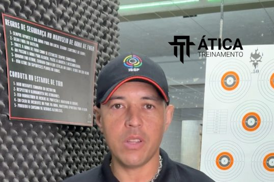
T-02
Orientação para o CR
Acompanhamento de quem quer ingressar no tiro esportivo, da primeira dúvida à documentação.
Quero esse treinamentoInstrutor de Armamento e Tiro credenciado pela Polícia Federal, Exército, SINARM e SIGMA desde 2013. Do primeiro contato com o esporte à obtenção do CR e à evolução em competição, com método, disciplina militar e acompanhamento individual.
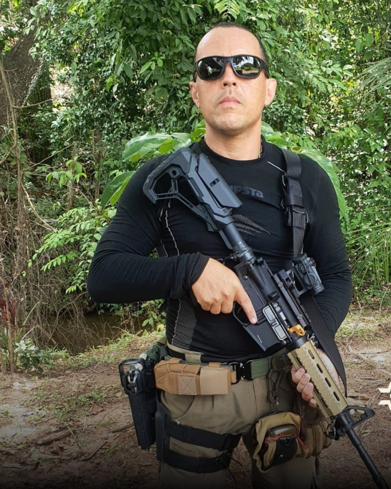
Cada aluno tem uma história, um objetivo e um ritmo. Escolha o seu perfil.

Acompanhamento de quem quer ingressar no tiro esportivo, da primeira dúvida à documentação.
Quero esse treinamento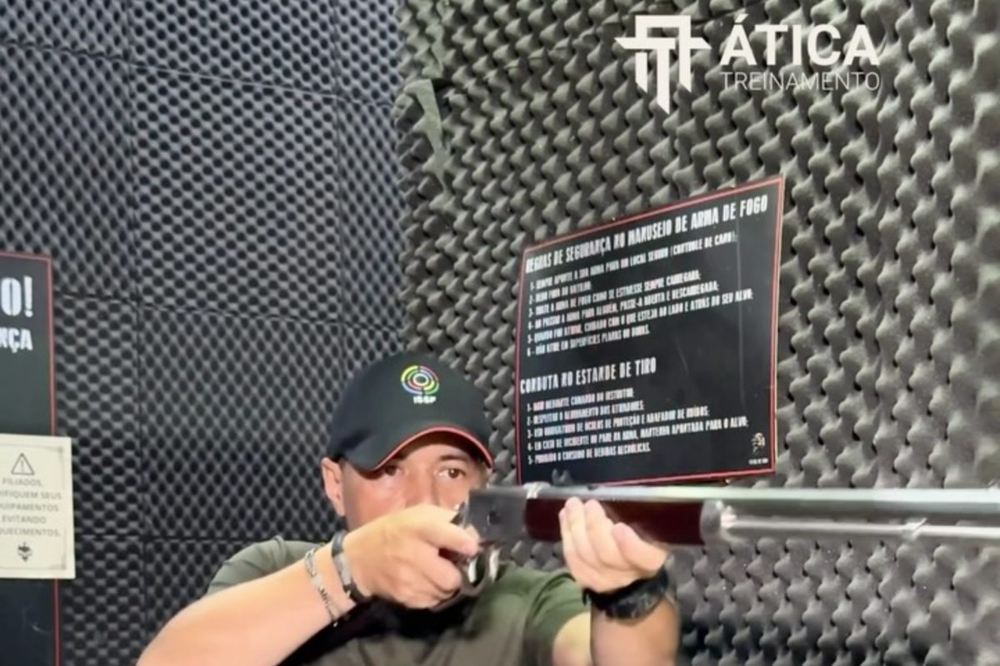
Formação técnica para uso seguro: manuseio, fundamentos do tiro e aperfeiçoamento contínuo.
Quero esse treinamento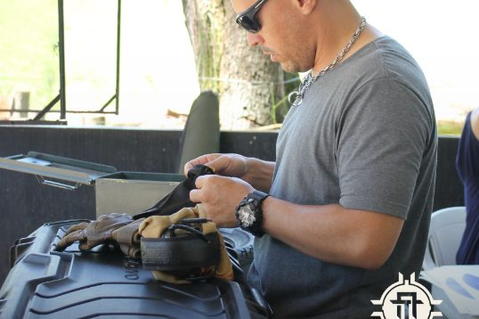
Treinamento para famílias e proprietários sobre segurança e uso responsável em casa.
Quero esse treinamento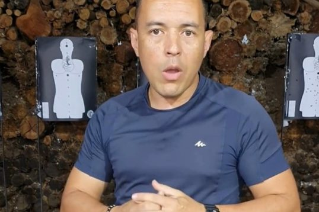
Para quem já possui autorização: segurança, decisão e técnicas aplicadas ao porte velado.
Quero esse treinamento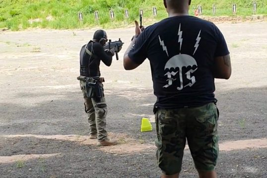
Capacitação de vigilantes e empresas em procedimentos, prevenção e atuação segura.
Quero esse treinamento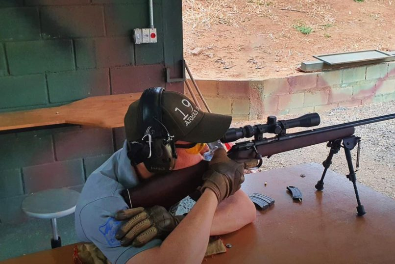
Preparação personalizada para iniciantes e competidores que querem evoluir em provas.
Quero esse treinamento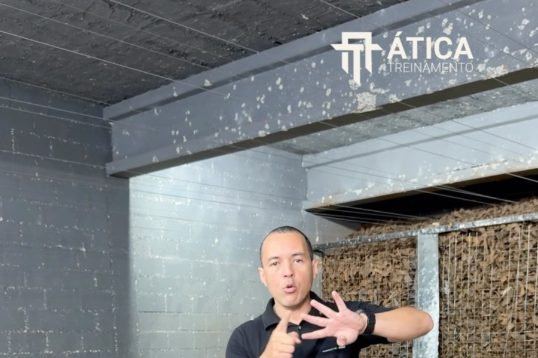
Técnicas, tomada de decisão e preparo para situações reais, dentro dos limites da lei.
Quero esse treinamento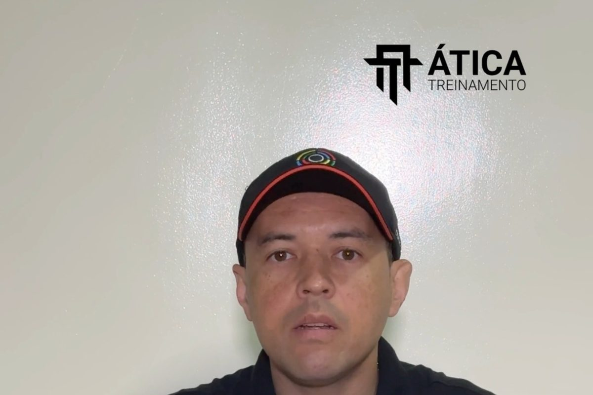
Controle de prazos e vencimentos de CR, CRAF e demais obrigações legais.
Quero esse serviço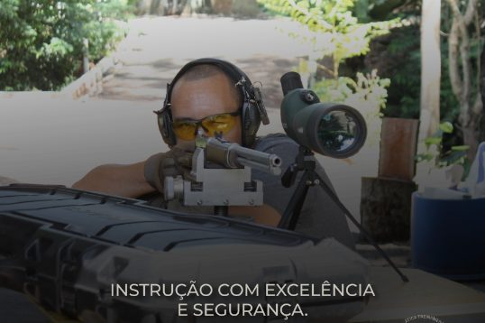
Orientação documental para produtores rurais autorizados ao controle de espécies invasoras.
Quero esse serviçoPosse, porte e CR não são a mesma coisa. Aqui o foco é o esporte, num processo regulamentado e acompanhado etapa por etapa.
Everton Luis Barbosa, natural de Mirassol/SP, serviu no Exército Brasileiro entre 2005 e 2012, participou da Missão das Nações Unidas para a Estabilização do Haiti e hoje forma atiradores esportivos com foco em segurança, técnica e legalidade.
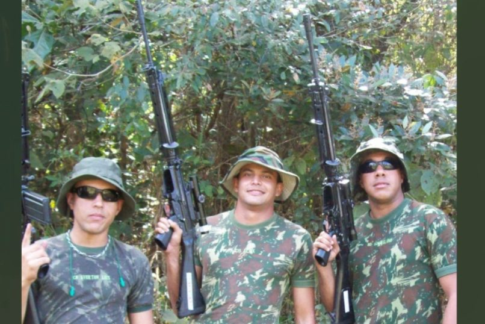
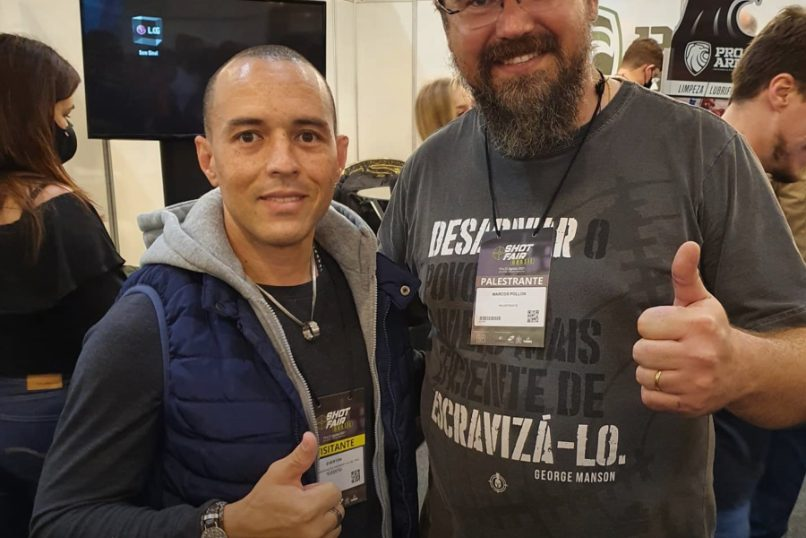
Quem atende aos requisitos legais: idoneidade, residência fixa, ocupação lícita, aprovação na avaliação psicológica e no teste de capacidade técnica e vínculo com um clube de tiro.
Não. O primeiro passo é entender o processo e iniciar a formação em um clube de tiro.
Sim. O treinamento foi pensado para quem está iniciando e quer conhecer o esporte com segurança.
Sim. É uma prática regulamentada pela legislação brasileira, com requisitos específicos.
Depende da documentação apresentada e da análise dos órgãos competentes.
A legislação prevê idade mínima para o CR; na conversa inicial você recebe a orientação para o seu caso.
Receba uma orientação inicial e descubra o caminho adequado para o seu objetivo.
Quero tirar meu CR